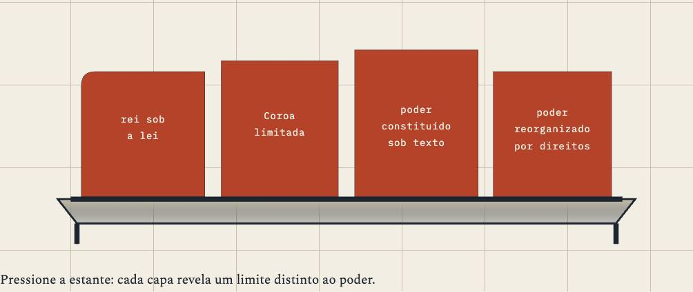
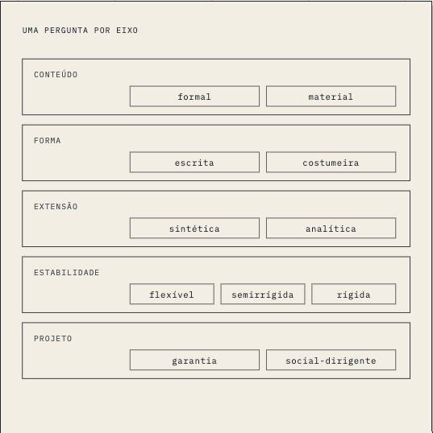
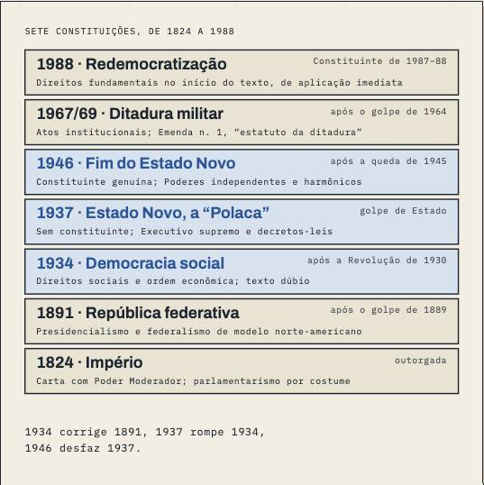
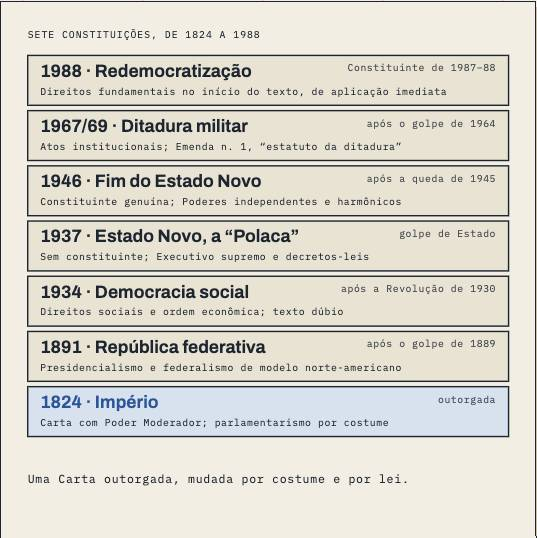
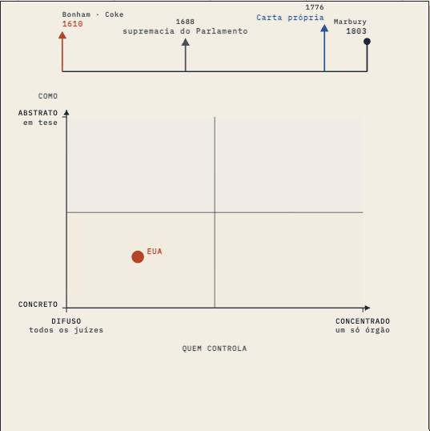

The best prose on the site, built in two days, and never touched by the line.
A 1 Everglades course: all 37 pages were written on 29–30/09, before Source Pipeline v1. It has no shelf, no triage, no plan, no house layer. The course has no plano de ensino on disk.
What went well
- The lessons read decisions, step by step. Aula 21 rebuilds the ADPF 132 vote in the order Ayres Britto argued it, each step with its article; 4,041 words, negated inference 0.2.
- Plain, concrete openings. Aula 23 opens on a tenant losing her home and keeps that case through the lesson.
- The course is large and whole. 37 pages, median 3,257 words, longer than every course but Latam and Processo.
What went badly
- Hardly a drawing. 32 of 37 pages have no figure; only Aulas 01–04 have one each.
- No source on the page. 0 source blocks and no house layer on any of the 37.
- The case pages repeat each other. ADPF 132 has three pages (15-casos, 21, 21-casos), RE 778.889 two (16-casos, 21-casos), ADPF 130 two (18-casos, 19-casos).
- Some pages are two sittings. Aula 03-república is 7,211 words and Aula 04 6,618: past 2× the site median.
- The tic is here too. Negated inference median 1.4/1k; Aula 23 5.2, Aula 08 4.3.
Next, in order
- Keep the text. Add the house layer and real source blocks from the decisions these pages already read.
- Give it a course blueprint before anything else: it would merge the duplicated case pages and split 03-república and 04.
- Draw it: a figure cast from the course blueprint, the decisions as instruments.
- Run S0–S4 only when a rebuild is due; the shelf is the decisions, and they are public.
Thoughts
Const I is the uncomfortable result for the factory: the course with no pipeline has some of the best prose. It was written straight from the decisions, in the order the judges argued, and that is exactly what the line later had to learn to require. What it lacks is everything around the prose: drawings, source blocks, a plan that stops three pages telling the same case. It should get those as layers on the existing text, and it should be last in line for a rebuild.
CEO · 14/10
The life of the course
built by the CEO built by Codex (size = words) a commit a FLIGHT-LOG rule a check comes into force
The lessons





Where the sources went
No shelf, no triage: this course was written before the pipeline and never went through it, so there are no source threads to draw.